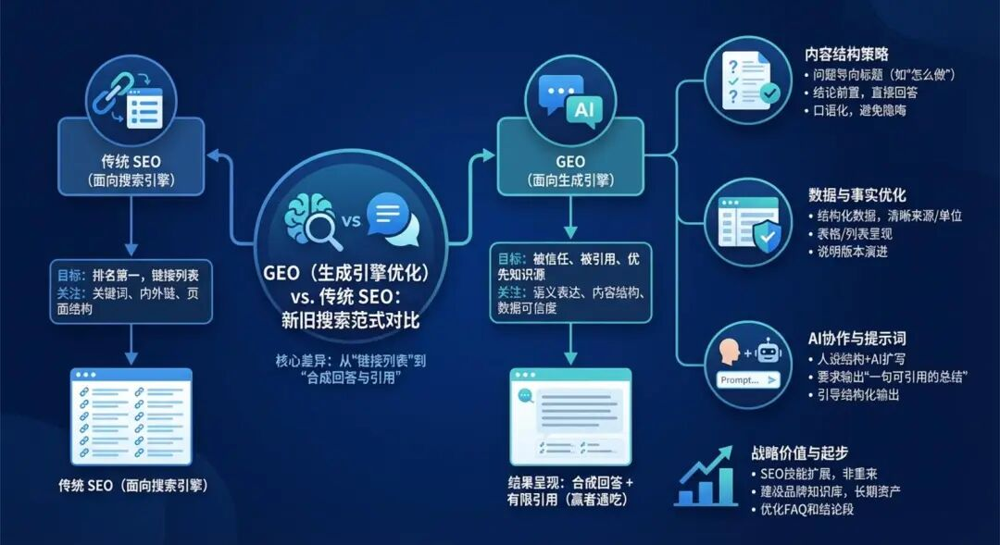
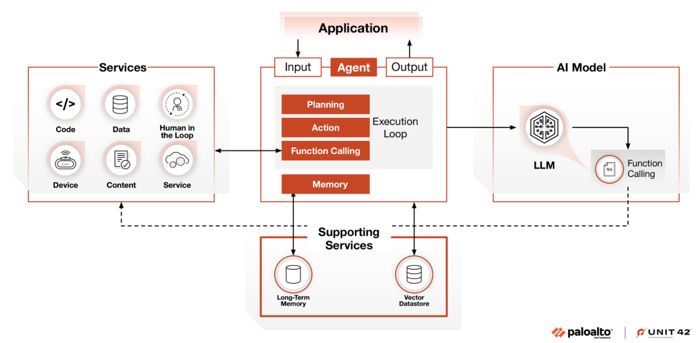
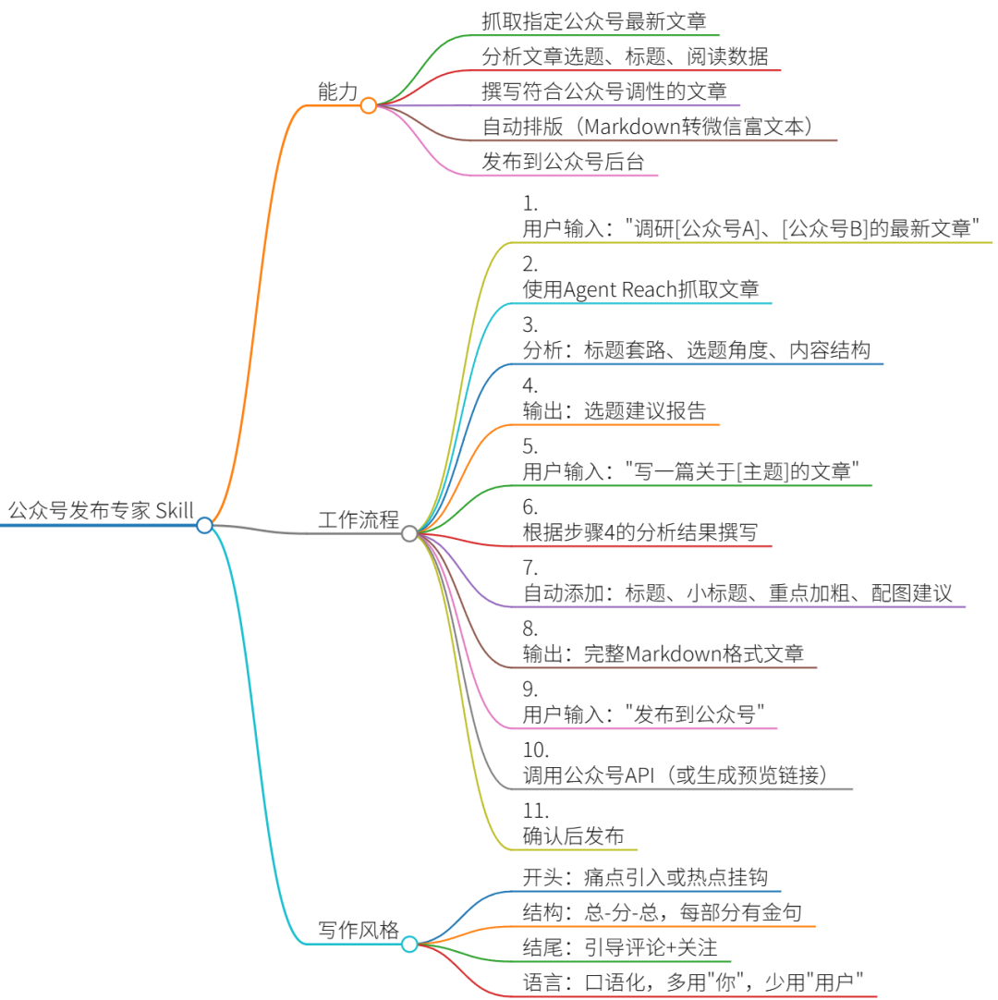

你没看错，这是一位痴迷龙虾的博主，前几天还在教大家疯狂安装，体验下来一番，着实对龙虾有些许失望~这不是没有缘由的。
但先别急着卸载，这篇可能是你从"电子养蛊"到"真·数字员工"的转折点。
今天我不讲虚的，直接手把手教你：如何让龙虾帮你写完、排好、发布一篇公众号文章，全程你只需要说3句话。
一、装完第7天，我差点把它删了（但你不用）
第一次跑通OpenClaw的时候，我兴奋得像个200斤的孩子。想着终于要有自己的"数字员工"了，躺在床上就能把活儿干完，傅盛同款get！
结果现实给了我三个大耳刮子：
第一巴掌：让它去读个热点文章，它告诉我"无法访问"；让它抓个竞品公众号，它直接把排版糊成浆糊。
第二巴掌：我照着教程装了七八个Skill，结果一个冲突报错，整个龙虾瘫痪，半夜三点我还在修Docker。
第三巴掌：昨天教它的工作流程，今天再问，它一脸茫然："主人，你在说什么？"
那一刻我真的失望了。这不是AI Agent，这就是个需要我伺候的"电子宠物"。
但就在我准备右键删除的前一晚，我突然悟了：
龙虾本身只是个"壳"，真正让它变强的，是你给它装的工具、喂的知识。
就像你买了台顶配电脑，不装软件它就是块砖头；你招了个清北毕业生，不培训他就是个高分低能。
所以今天的教程，我会直接给你"装好工具、喂好知识"的龙虾，你只需要复制粘贴，不用再踩我踩过的坑。
二、给你的龙虾装上"外接大脑"
在教发布公众号之前，我们必须先解决三个基础问题：能上网、能读微信、不瞎搞。
🔧 第一步：装上Agent Reach（让它学会上网）
以前想让龙虾上网，要装一堆零散工具，维护起来像养了一群不听话的猫。
Agent Reach基本一把梭，把常用能力都打包好了：
装完之后，你的龙虾可以直接：
- 读网页
：curl直接拿干净Markdown，比浏览器快10倍 - 抓YouTube/抖音/B站字幕
：自动提取视频文字 - 解锁社交平台
：配上Cookie后能读Twitter、小红书、LinkedIn
安装命令（复制粘贴到龙虾的 skill 目录）：
git clone https://github.com/suhanoves/agent_reach.git
📱 第二步：装上公众号读取MCP（打通微信生态）
Agent Reach很强，但面对微信公众号的反爬机制，它还是有点水土不服。
这时候需要补一个wechat article reader MCP：

装好之后，直接把公众号链接丢给龙虾：
"读一下这篇，提炼三个核心观点，存到我的知识库"
它会绕过微信的防爬，直接读到全文并总结。
🛡️ 第三步：装上Skill Vetter（安全审计）
现在社区Skill满天飞，但乱装等于给电脑埋雷。
Skill Vetter就是给你的龙虾打疫苗。装新Skill之前先让它审计一遍，检查权限是否合理、代码是否安全。

安装命令：
git clone https://github.com/openclaw/skill_vetter.git
三、手把手实战：让龙虾帮你发公众号
工具装好了，现在进入正餐。
假设你是一个科技博主，今天要让龙虾帮你：
抓取3个竞品公众号的最新文章 分析选题趋势 写一篇关于"AI Agent"的推文 - 自动排版并发布到你的公众号后台
📝 Step 1：建立"公众号运营"工作流（喂知识）
在龙虾的 skills 文件夹里新建一个文件，叫 wechat_publisher_skill.md。
这个文件就是给龙虾写的"岗位说明书"，告诉它：你的角色是公众号运营专家，你要做什么、怎么做、写什么风格。
具体内容要包括这几部分：
首先是能力定义——告诉它你会干啥：能抓取指定公众号文章、分析选题和标题套路、撰写符合调性的内容、自动排版、还能发布到后台。
然后是工作流程——把它当新员工培训：
第一步：用户让你调研竞品时，用Agent Reach去抓文章，分析标题套路和选题角度，输出选题建议报告 第二步：用户让你写文章时，根据刚才的分析结果撰写，自动加上标题、小标题、重点加粗，输出完整Markdown 第三步：用户让你发布时，调用公众号API或生成预览链接，确认后发布
最后是写作风格——相当于品牌调性手册：
开头要痛点引入或蹭热点 结构用总-分-总，每部分要有金句 结尾引导评论和关注 语言要口语化，多用"你"，少用"用户"这种冷冰冰的词
把这个文件存好后，重启龙虾，它就已经"入职"了你的公众号运营岗位。
🚀 Step 2：实战对话（只需要说3句话）
现在打开你的龙虾对话框，开始甩手掌柜模式：
你说的第一句话：
"调研一下'极客公园'、'机器之心'、'量子位'最近一周关于AI Agent的文章，分析一下他们的选题角度和标题套路。"
龙虾的思考过程：
调用Agent Reach访问这三个公众号 使用公众号MCP读取文章内容 分析数据并输出报告
龙虾的输出：
📊 竞品分析报告【极客公园】- 标题套路：数字+痛点，如"3个AI Agent坑，90%的人踩过"- 选题角度：侧重产品体验和避坑指南【机器之心】- 标题套路：技术关键词+突破，如"OpenClaw新版本支持多Agent协作"- 选题角度：技术解读和行业趋势【量子位】- 标题套路：人物+故事，如"傅盛14天养出数字员工，我们做了一份攻略"- 选题角度：案例拆解和实操教程💡 选题建议：结合"避坑+实操"，标题可以用"我装了7天OpenClaw，踩了这5个坑（附避坑指南）"
你说的第二句话：
"就按这个选题，写一篇2000字的文章，风格要口语化，多用emoji，结尾引导评论。"
龙虾的思考过程：
调用刚才写的Skill里的写作风格指南 结合调研数据撰写内容 自动排版（加粗、分段、 emoji）
龙虾的输出（节选）：
🦞 我装了7天OpenClaw，踩了这5个坑（附避坑指南）
你没看错，这是一位痴迷龙虾的博主，前几天还在教大家疯狂安装，体验下来一番，着实对龙虾有些许失望~这不是没有缘由的。
但先别急着卸载...
🕳️ 坑1：以为装完就能用，结果它是个"电子金鱼"
刚装好的时候，我让它读个公众号文章，它直接把排版糊成浆糊...
（中间内容省略）
✅ 正确姿势：先给它装这三个"外接大脑"
...（详细安装教程）...
💬 你在养龙虾时踩过哪些坑？评论区聊聊，我整理成避坑大全！
👆 关注我看更多AI Agent实操指南
你说的第三句话：
"排版好，发布到公众号，设置今晚8点定时发送。"
龙虾的操作：
将Markdown转换为公众号富文本格式 调用微信公众平台的发布API（需提前配置好账号权限） 设置定时任务 返回预览链接供你确认
龙虾的确认消息：
✅ 文章已生成并排版完成📎 预览链接：[点击预览]⏰ 定时发布：今晚20:00⚠️ 请确认是否发布？回复"确认"即可提交
你回复"确认"，Done！ 整个过程你只用了3句话，龙虾帮你完成了：调研→写作→排版→发布的全流程。
四、进阶玩法：让它变成你的"选题雷达"
上面的流程还能再升级。
你可以设置一个定时任务，让龙虾每天早上8点自动执行：
抓取你关注的10个竞品公众号最新文章 分析哪篇爆了（标题+内容角度） 结合当前热点，给你生成3个选题建议 发送到你的微信/邮件
这相当于雇了一个7×24小时的选题监控员。
配置方法：在龙虾的 schedule 文件里添加一段JSON配置，设定任务名称、执行时间、具体操作步骤（抓取哪些公众号、分析趋势、生成几个选题、发送到哪里）。
五、养龙虾的真相：它不是员工，是你能力的"放大器"
玩了这段时间，我对OpenClaw的感情从"失望"变成了"敬畏"。
它不是魔法，而是一面镜子：
你给它垃圾工具，它给你垃圾结果 你给它清晰的工作流（Skill），它给你稳定的产出 你给它持续的知识投喂，它变成你的"第二大脑"
那个让我差点崩溃的"金鱼脑"问题，其实是因为我没有建立MEMORY.md的习惯。现在每次对话结束，我都会让它把关键结论写入记忆文件。养久了你会发现，它真的越来越懂你关注的领域。
所以别再问"为什么我的龙虾不如傅盛的聪明"。
龙虾不会自己变强，你得给它装工具、喂知识、不断迭代。
现在我的配置是：Agent Reach负责信息获取 + 公众号MCP处理中文内容 + Skill Vetter保驾护航 + 自定义Skills沉淀方法论。
一个人 + OpenClaw + 一堆调教好的Skills，真的可以像带着一个小团队在工作。
如果你现在还处于"装完就卡壳"的绝望期，别放弃，按照这篇教程把那三个工具装上，再给它写一份"公众号运营"的Skill。从"电子养蛊"到"数字员工"，可能就差这一步。
毕竟，养宠物靠感情，养龙虾靠手艺。
PS：装Skill前记得先装Skill Vetter，这句话值得你说三遍。现在的社区Skill质量参差不齐，安全审计不是可选项，是必选项。